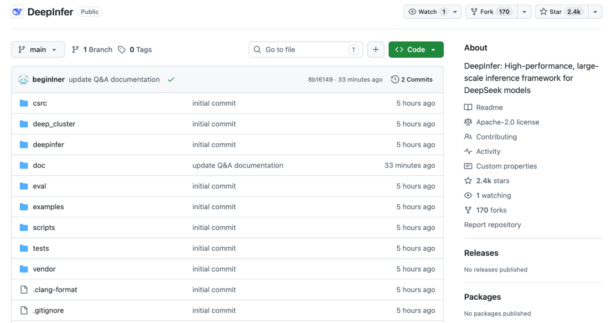
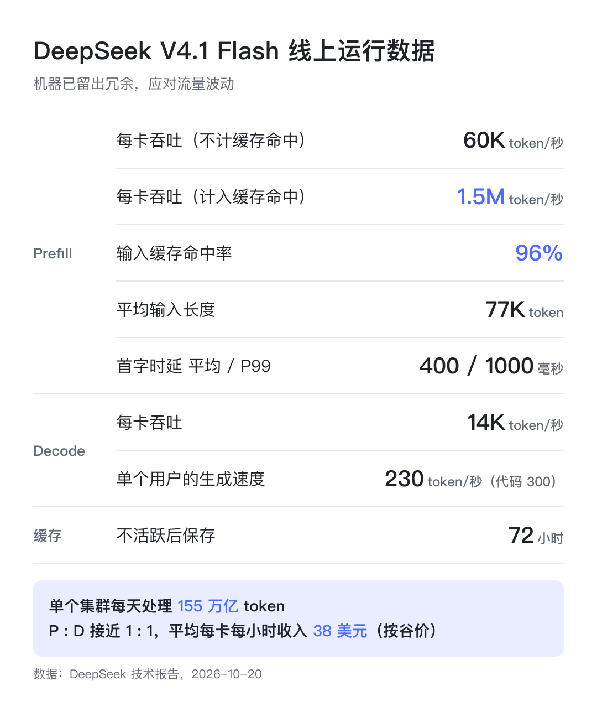
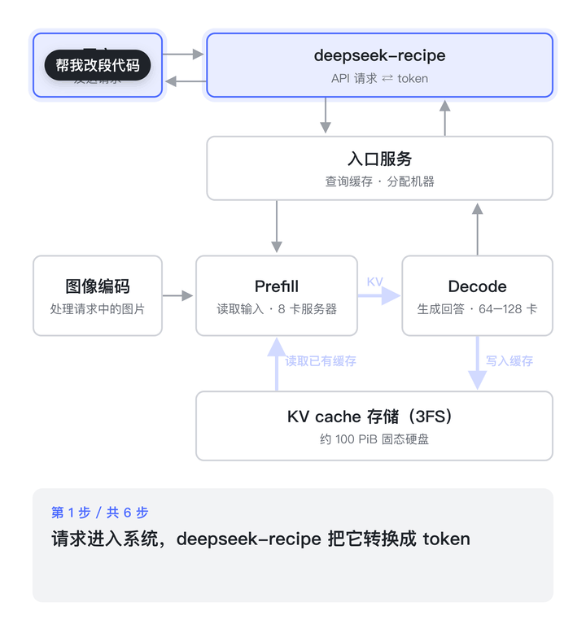
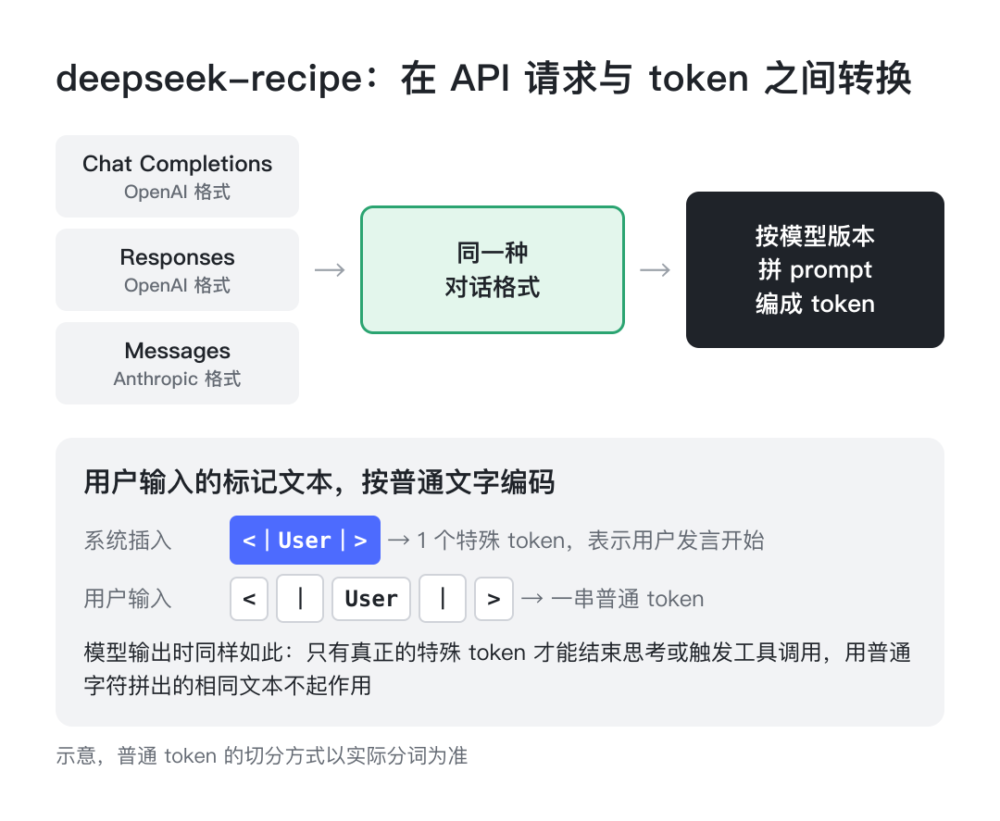
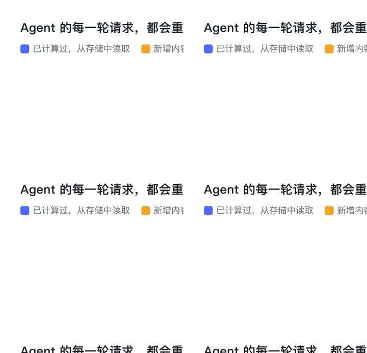
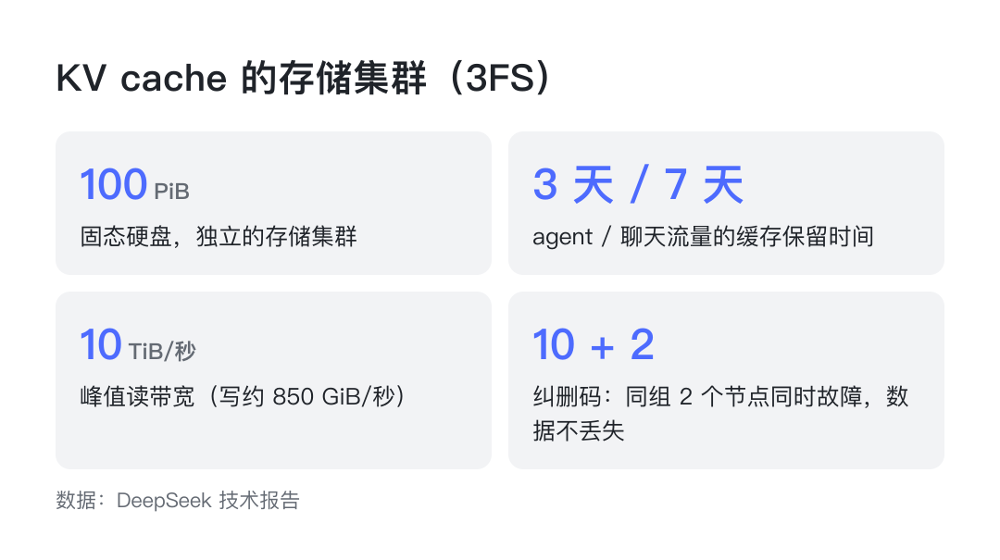
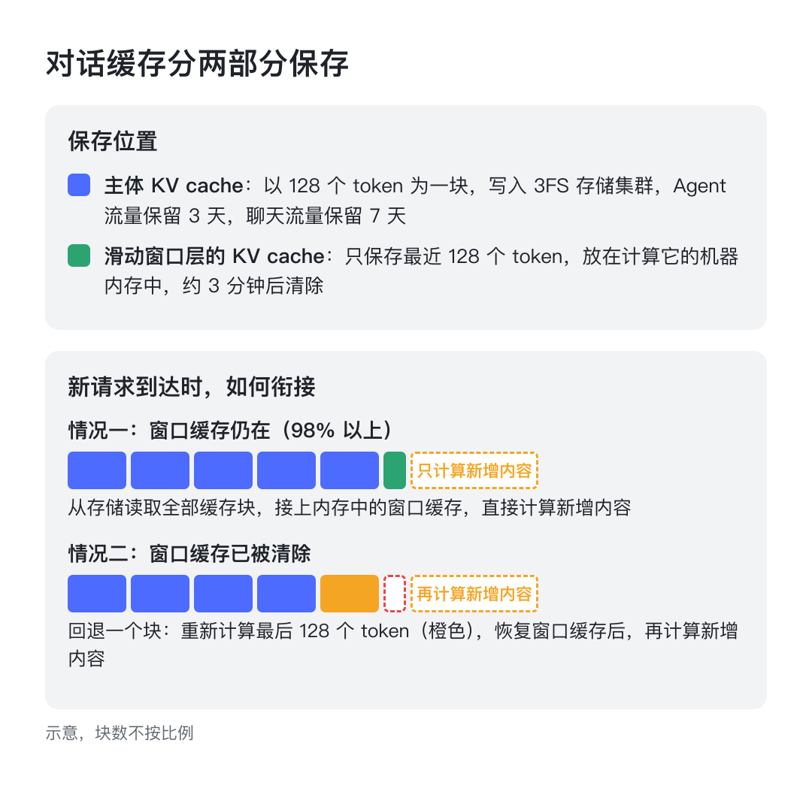
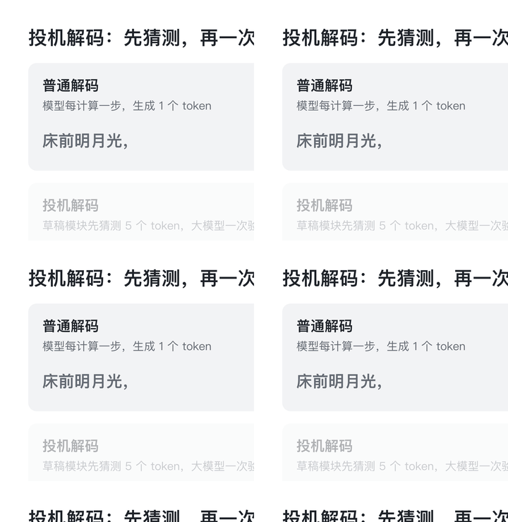
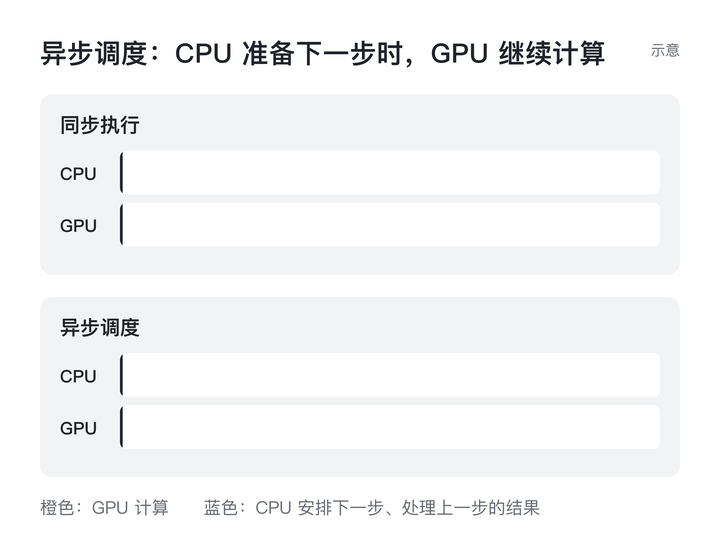
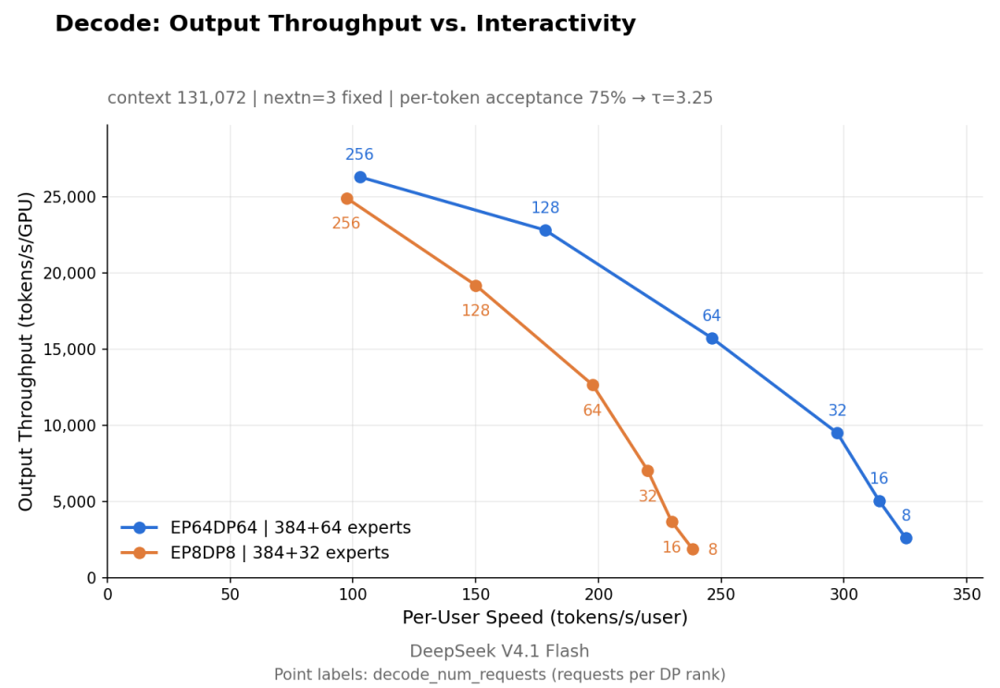

刚刚，DeepSeek 开源了自家的推理框架 DeepInfer，也是当前 V4.1 Flash 所用的那套推理框架；同一时间开源的，还有编解码组件 deepseek-recipe

作为背景，这里有一些线上数据：
单个集群每天处理
155 万亿个 token每次请求平均输入
77K个 token，其中 96% 命中缓存，不需要重新计算平均每张卡每小时的收入是
38 美元（按谷价计算）

本文则是以原理的角度，结合这份技术报告和仓库里附带的部署问答，给大家讲一下：一个请求发给 DeepSeek 之后，推理系统是如何一步步把它算完、返回结果的，以及在每一步里，DeepSeek 是怎样节省算力的
一次请求，要经过哪些环节
模型处理一次请求，计算分为两个阶段：
Prefill（预填充）模型读取你发来的全部输入，包括系统提示、历史对话、文件和问题。读取的过程中，每个 token 在模型的每一层都会算出一组中间结果，也就是 KV cache
Decode（解码）模型开始生成回答，每次输出一个 token。每输出一个 token，都要用到前面所有的 KV cache
这两个阶段对硬件的要求并不相同。Prefill 一次处理几万个 token，主要消耗的是计算能力；Decode 每次只生成一个 token，大部分时间花在从显存中读取参数和缓存上
因此，DeepSeek 把两个阶段部署在不同的机器上（这就是常说的 PD 分离）：Prefill 使用常见的 8 卡服务器，Decode 使用 64 到 128 卡的超节点。如果请求里带有图片，还会先交给单独部署的图像编码服务处理

在实际部署中，两类机器的卡数比例接近 1:1。最小可以用一组 Prefill 加一组 Decode 运行，但要达到较高的效率，起步规模是 64 卡 Prefill 加 64 卡 Decode
请求如何变成 token
请求进入系统后，首先由这次一起开源的 deepseek-recipe 处理
目前主流的 API 格式有三种：
OpenAI 的 Chat Completions API
OpenAI 的 Responses API
Anthropic 的 Messages API
deepseek-recipe 会把这三种请求统一转换成同一种对话格式，再按照模型版本拼成 prompt、编码成 token；模型生成的 token，也由它转换回对应的格式，以流式的方式返回

这个过程中，它还处理了两个问题：
防止注入：DeepSeek 的模型用一些特殊 token 标记对话结构，比如用户发言的开始、思考的结束、工具调用的开始。如果用户在输入里手动写了
<｜User｜>这样的字符串，deepseek-recipe 会把它当作普通文本编码，模型不会把它识别为结构标记加快编码：特殊 token 的位置在拼接 prompt 时就已经确定，它们之间的几段普通文本可以分别并行编码，从而缩短长上下文请求的分词时间
返回结果时也有类似的处理。比如一个汉字在 UTF-8 中占 3 个字节，可能被拆分到相邻的两个 token 里，deepseek-recipe 会先暂存，等字符完整后再输出；工具调用的参数也是边生成边返回，不需要等全部生成完毕
由于 deepseek-recipe 的处理逻辑与 DeepSeek 官方 API 完全对齐，其他人自行部署 DeepSeek 的模型时，也能获得与官方一致的接口表现
如何做缓存
在 Agent 场景中，每调用一次工具，客户端都要把完整的历史记录重新发送给模型，包括系统提示、工具说明，以及之前每一轮的回复和工具结果。而其中的大部分内容，在上一轮请求时已经计算过了
DeepSeek 的做法是，把计算过的 KV cache 保存下来，下一轮请求只计算新增的部分
需要注意的是，只有前缀相同（从第一个 token 开始一致）的内容才能命中缓存，从中间开始的重复内容无法复用

从线上数据看，同一张卡执行 Prefill，不计缓存命中时，每秒处理 6 万 个 token；计入缓存命中后，每秒处理 150 万个，相差 25 倍
这些缓存存放在一个独立的存储集群中，使用的是 DeepSeek 此前开源的分布式文件系统 3FS，容量约 100 PiB，全部是固态硬盘。KV cache 以 128 个 token 为一块写入，Agent 流量的缓存保留 3 天，聊天流量保留 7 天

聊天流量保留得更久，是因为其中有少数缓存会被反复读取很多次，一旦丢失，对整体命中率的影响较大。如果只保留 3 天，聊天流量的命中率会下降 0.5% 到 1%
之所以使用独立的存储集群，而不是放在计算机器自己的内存里，主要有两方面的考虑：
任何一台 Prefill 机器都能读取任意一段缓存，分配请求时，不需要把用户固定到上次那台机器上
计算机器的故障率比存储高一个数量级以上。缓存放在存储集群里，即使计算机器出现故障，缓存也不会丢失
读取缓存的过程，同样不能拖慢首字延迟。入口服务只查询元数据，确认能命中多长的前缀；把数据从硬盘读到内存、再传到显存，都在后台完成，并且与计算同时进行。目前线上平均每次输入 77K 个 token，首字延迟平均为 400 毫秒
如何处理缓存未命中
V4.1 Flash 的模型中，有一部分层使用了滑动窗口注意力（SWA），每个 token 只关注距离自己最近的 128 个 token。这部分的 KV cache 是单独保存的：不写入硬盘，而是保留在计算它的那台机器的内存中，大约 3 分钟后就会被清除，命中率在 98% 以上
如果没有命中，V4 的做法是精确重算，也就是逐层恢复窗口状态，需要重新计算“层数 × 窗口长度”个 token。为了减少这种情况，V4 把这部分缓存也写入了硬盘，结果占用了硬盘缓存近一半的容量
但这部分缓存，只在对话进行中的几分钟内有用，用保存数天的硬盘来存放并不划算
V4.1 改用了 SWA Bounded Replay：只重新计算最后 128 个 token，并且计算时注意力只在这 128 个 token 之内进行，得到一份近似的窗口缓存。这样一来，重算的成本是固定的，与上下文长度和模型层数都无关

同样的方法，也用在了模型的另外 20 层上。这 20 层的窗口缓存，每次 Prefill 都需要重新计算，原本要处理最后 2560 个 token，现在只需要处理最后 128 个，Prefill 的总计算量因此减少了近一半
如何加快生成速度
进入 Decode 阶段后，模型每计算一步，只能生成一个 token
投机解码的思路是：先由一个轻量的草稿模块连续猜测 5 个 token，再由大模型一次性验证这 5 个。猜对的部分直接采用，在第一个猜错的位置，由大模型给出正确的结果。这样，一步计算就能得到不止一个 token

DeepSeek 自研的投机解码方法叫 DSpark，在此基础上又增加了一步：先估计每个猜测被接受的可能性，可能性低的就不再验证，把验证的算力留给其他请求。与固定验证 5 个相比，线上吞吐提升了 6%
此外，在每两步计算之间，CPU 需要安排下一步的请求、处理上一步的结果，这段时间里 GPU 原本处于等待状态。DeepInfer 让两者重叠进行：GPU 计算第 N 步时，CPU 已经在安排第 N+1 步

目前线上 Decode 阶段，每张卡每秒生成 14K 个 token，单个用户的生成速度为每秒 230 个 token，代码场景下为 300 个
如何做负载均衡
V4.1 Flash 是 MoE 模型，模型中有多组“专家”参数，每个 token 只会用到其中几组。其中，路由专家共有 384 个
在 Decode 阶段，DeepSeek 把这些专家分布到 64 张卡上，每张卡存放 6 个，再额外放 1 个热门专家的副本，一共 7 个。每张卡上的专家越少，每一步需要从显存读取的参数就越少，同样数量的卡就能服务更多请求

热门专家的副本也会动态调整：每 1000 步统计一次各个专家的负载，每 10000 步重新分配一次。线上实测，负载最高的卡只比平均水平高 9%
请求同样需要均匀分配：
Prefill 按输入长度分为 4 档（16K 以下、16K 到 64K、64K 到 256K、256K 以上），每一档分配多少台机器，根据上一轮的需求动态调整
Decode 同时考虑两个因素：每张卡上的请求数量，以及这些请求的缓存总长度。短请求分给请求少、缓存较长的卡，长请求分给缓存较短的卡
通过这些调度，系统整体能达到离线测试中完全均衡状态的 80% 左右
机器数量也会随流量自动增减：Prefill 根据未命中缓存的 token 数量判断，Decode 根据正在处理的请求数量判断。如果一个 Decode 实例中有一张卡出现故障，整个实例需要重启，重启后用剩余正常的卡重新组成实例
至于能不能跨机房部署，DeepSeek 的回答是技术上可行，每 8 张卡需要配备约 400Gbps 的互联带宽，但“可能会损失可靠性，跨机房的光纤容易被挖断”
DeepSeek 自己的推理节点，部署在不同但相邻的机房里
最后
以上这些，便是 DeepSeek 推理系统处理一次请求的过程：
把 API 请求转换成 token
Prefill 读取输入，能复用的缓存直接从存储中读取
Decode 逐个生成 token，用投机解码和异步调度加速
把专家和请求均匀地分到每张卡上
这次开源的有两个项目：DeepInfer（Apache 2.0 协议）和 deepseek-recipe（MIT 协议）。DeepInfer 目前支持 DeepSeek-V4.1-Flash，可以运行在英伟达 SM100 GPU 和华为昇腾 950 上，开源版本提供的是离线推理
上文提到的缓存存储系统、Prefill 与 Decode 的分离部署，以及多副本之间的负载均衡，由于与内部基础设施耦合较深，暂时没有开源。如果要搭建完整的线上服务，这几部分需要自行实现
DeepInfer 最初主要基于 vLLM 构建，也参考了 SGLang 和 TensorRT-LLM。之后 DeepSeek 新模型的推理代码，也会在这个仓库中持续更新